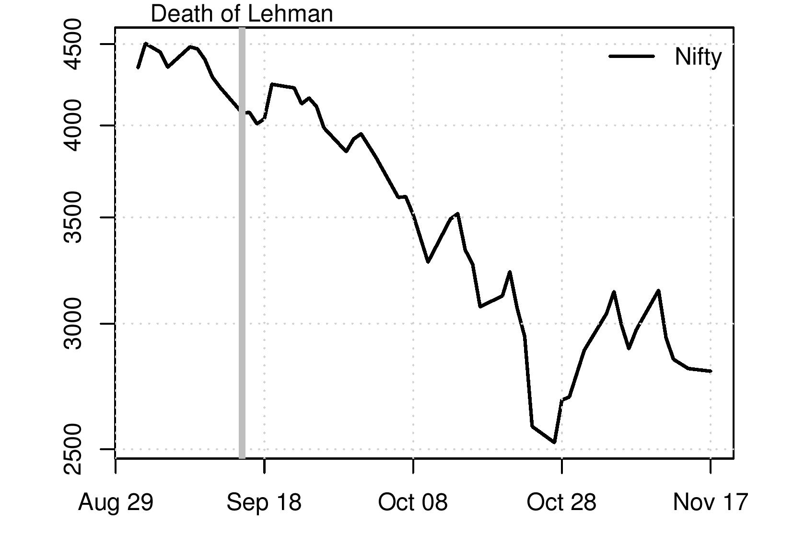
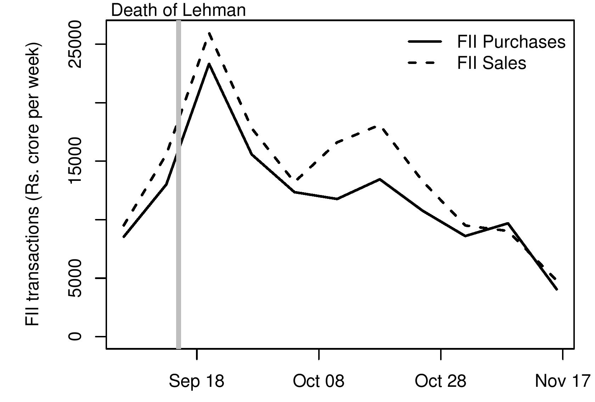
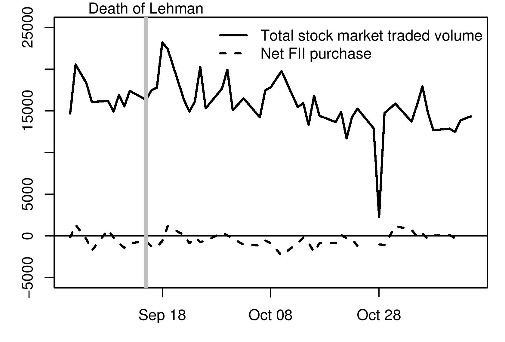

Foreign institutional investors
Financial Express, 24 November 2008
Stock prices in India have seen a huge decline along with the fall seen in stock markets all over the world. The world environment has impacted India hugely and all theories of decoupling of financial markets have been disproved. What has been the role of foreign institutional investors in transmitting global sentiments to India? There is a perception in the Indian media that FIIs play a dominant role in price formation in India. But the data tells a strikingly different story.
Figure 1 shows the stock market index, Nifty. The graph starts from 1 September 2008. The grey line in the figure marks 15th September 2008, the day Lehman Brothers filed for bankruptcy following which there was a sharp worsening of the global financial crisis. Stock prices in India fell sharply after this. The interesting question is: How does this link up to the activities of FIIs?
Figure 2 shows FII activity. The solid line represents weekly FII purchases, while the dashed line represents weekly FII sales. The difference between the two lines indicates net purchases/sales of FIIs every week.
FIIs have, on a net basis, sold shares in India in every week (except one) since the Lehman bankruptcy. One factor influencing this is redemptions of equity funds and hedge funds worldwide, which has forced them to sell assets. But the popular picture -- of all FIIs selling India in panic, and exiting en masse -- is not borne out by this data. Throughout the period after September 15, FIIs have continued to buy also. Some FIIs are buying, and some FIIs are selling. Both buy and sell numbers are very large, and the difference between them (the net buy) is quite small.
FIIs thus do not behave like a single homogenous investor, contrary to popular perception in India. This is not unexpected as there are a large number of different kinds of institutional investors such as pension funds and hedge funds who have different time horizons, different mandates. Thousands of FIIs are registered with SEBI; there is a diverse array of views about the future amidst them. In terms of policy implications this suggests that allowing retail investors to invest in India may be useful. Further liberalisation of access to India will further increase the diversity of views and compulsions of foreigners operating in India. This will help increase the stability of capital flows to India.
The second notable phenomenon visible in the data is in the net sales, or the difference between purchases and sales. This peaked in the middle of October. This does not correspond with the sharp fall in the stock price index seen in Figure 1 just before October 28. In fact, right after the sharp drop in prices (28 October), the net purchase by FIIs turned slightly positive.
In other words, newspaper headlines are wrong when they imply (a) that all FIIs are selling off their Indian equity assets and (b) that this is the source of the sharp decline in stock prices. FIIs have heterogenous positions on the stock market. There is a diversity of views and compulsions; there is a large gross buy and a large gross sale on every day, leading to a small net buy/sell. There is no one-to-one relation between FII net sales and stock price movements.
Why is the influence of FIIs so small? Figure 3 compares the size of FII activity relative to overall activity in Indian stock market. The black line is the sum of NSE and BSE turnover. (The sharp dip in trading volumes on Diwali day, in this picture, was because the markets only opened for an evening session on that day). After Lehman died, overall trading volume has held up: the Indian equity market has remained robustly liquid. This is unlike the experience in some other countries where the stock market has collapsed or been shut down by the government.
The dashed line in the graph is the net sales by FIIs. We find that FIIs account for only about one to nine percent of the activity on the stock market. The values for FIIs are tiny when compared with the size of the overall market. It is, therefore, not surprising that they do not have a large influence on the market.
Why did stock prices drop even though massive net sales by FIIs, or an en masse flight by FIIs from the country, did not happen? Stock prices are determined by the beliefs of lakhs of market participants across the country. These are the people who are watching industries, individual companies and making forecasts about the future performance of the companies. Some foreign investors participate in this kind of active stock speculation, but the bulk of it is done by domestic individuals. When global business cycle conditions became worse, these speculators started downgrading their optimism about the growth of profits and dividends on the part of Indian companies. This gave lower stock prices. The channel runs from news to forecasts to (primarily domstic and individual) speculators to stock prices.
Why does the media talk so much about FIIs even though their influence on stock prices is small? From the viewpoint of brokerage firms, what matters most is trading volume, because their fees are proportional to volume. Whether FIIs buy or sell, they generate fees for brokerage firms. FIIs tend to do business with a few large brokerage firms located in South Bombay who are focused on institutional investors. For these firms, FIIs are important customers. Journalists and television commentators tend to talk with a few big brokerage firms, and tend to think that FIIs are very important. They miss out on the thousands of stock brokers spread across the country, doing mostly retail business, who account for the bulk of activity on the stock market. The belief of the big institutionally oriented brokerage firms in Bombay, that FIIs are very important for their business, has got rubbed off into a broadly held belief in the media that FIIs are the most important participants in Indian financial markets.
Back up to Ila Patnaik's media page
Back up to Ila Patnaik's home page